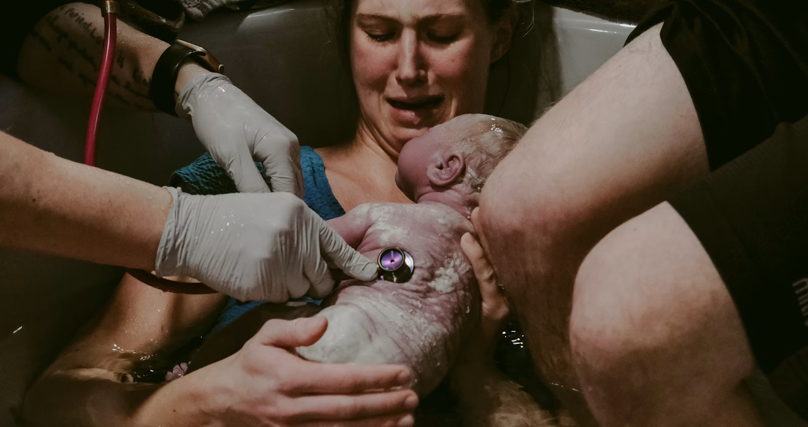

Laboring in a warm bath, known as hydrotherapy, is a widely used form of pain relief for both home and hospital births. However, giving birth submerged in the water ("waterbirth") is much less common. Many hospitals that offer hydrotherapy still require people to get out of the tub before it is time to push.
Evaluating the Evidence
If you ask for a waterbirth, you may hear that hospitals restrict it due to a lack of high-quality evidence. Most waterbirth data came from observational studies of home births or international hospitals. This created a methodological problem. In an observational study, it is difficult to determine if positive outcomes are due to the waterbirth itself, or if they are driven by the characteristics of the people who choose it. If a person who strongly desires an unmedicated birth chooses a waterbirth, it is difficult for researchers to separate the effect of the water from the effect of the person’s baseline preferences.
A randomized controlled trial addresses this bias. By randomly assigning people to one group or the other, researchers balance the groups across all characteristics, including unmeasured factors like personal preference.
The first randomized controlled trial of waterbirth in the United States was conducted at a Milwaukee-area hospital in 2022-2023. The study found that people randomized to the waterbirth arm were less likely to use intravenous pain medications or epidurals. They also experienced a shorter first stage of labor (the phase before pushing begins). Because of the randomized design, these differences can be attributed directly to offering waterbirth rather than the underlying preferences of the participants. Based on these findings, the Milwaukee hospital where the trial took place began offering waterbirth as an option for low-risk patients.
What Happens During Labor
If you are planning a waterbirth, it is also important to understand the unpredictability of labor. A second analysis from this same trial, which I co-authored, explored what actually happens when people plan a hospital waterbirth. We found that of the participants who were still eligible when they arrived at the hospital, 71% entered the tub during labor, and 43% ultimately gave birth in the water. Common reasons for changing the plan included developing high blood pressure, deciding to get an epidural, or needing a cesarean or a delivery assisted by a vacuum or forceps.
These safety-related concerns highlight the importance of offering waterbirth in a hospital environment. If people who want to have a waterbirth are not allowed to do so at the hospital, they may choose to do so at a birth center or at home. While that is a safe choice for some people, this study demonstrated that many of the people who planned to have a waterbirth developed a medical condition that required care not available at a birth center or at home.
The data also revealed which characteristics predicted a successful waterbirth. Participants were more likely to give birth in the water if they arrived at the hospital more dilated or if they had given birth before. However, the study also found that people who gave birth in the water tended to be older, married, and have higher levels of education. While we cannot know for sure why married people were more likely to give birth in water, it is possible these participants benefited from having a spouse acting as continuous labor support. Because continuous support is a known factor in achieving birth goals, this highlights the value of professional doulas for people who do not have stable support available. This also raises a critical question for medical systems about how structural factors and labor support shape equitable access to care.
Questions for Your Doctor or Midwife
For anyone considering a waterbirth, the best next step is to ask your provider about specific hospital policies early in your pregnancy. You can also review guidance from the American College of Nurse-Midwives, which many hospitals use to establish their protocols. It is important to clarify whether the hospital only allows hydrotherapy during labor or if they actually support giving birth in the tub. Pregnant people should also discuss what medical or pregnancy conditions might disqualify them from using the tub as their due date approaches.
Beyond clinical outcomes, offering waterbirth expands access to evidence-based options during labor. Providing these choices facilitates shared decision-making and allows pregnant people to maintain greater autonomy over their birth experience.